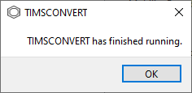

Usage¶
GUI Usage¶
The TIMSCONVERT GUI can be started by downloading directly from the Github release or installing timsconvert via
pip. If downloaded from Github, unzip the folder and open TIMSCONVERT.exe. If installed via pip to a virtual
environment, run the timsconvert_gui command to start the GUI. The following window should appear.

Once open, two columns will appear in the GUI. One the left is the data conversion queue. Click on the
Add Bruker timsTOF Data to Queue button to open a file dialogue window and select either a Bruker *.d directory
or a directory containing multiple *.d directories. All *.d directories that are found will appear in the
Queue.

If unwanted directories have been added, one or more rows in the Queue can be selected and removed by
highlighting them and clicking on the Remove from Queue button.

On the right, all data conversion parameters can be found. See below for more infomation on each parameter. Once the
conversion parameters have been configured, click on the Convert Data button to begin data conversion. Adding or
removing data will be unavailable until the current conversion has completed, and each row will be replaced with a
progress bar.

Please note that for larger datasets, you may see a message that says TIMSCONVERT is Not Responding. This is due to the program using more computation power to convert data; the GUI will remain unresponsive but the data conversion will still process in the background, and control will be returned when the process has finished.
Once completely, a message will appear to show that the current job has finished, in addition to any errors that may have occurred during the data conversion process.
Command Line Usage¶
The command line interface version of TIMSCONVERT supports conversion of all experimental types specified above.
Basic Example¶
Only the input parameter is required to run TIMSCONVERT. By default, the output file(s) can be found in the same
directory as the input data using the same filenames as the original .d file(s). Please note that any previously
converted mzML/imzML files in the output directory with the same filename will be overwritten. If no other parameters
are specified, their default values will be used.
timsconvert --input [path to data]
Depending on the size of your data and the number of files being converted, TIMSCONVERT may take some time to finish conversion.
For a full list of parameters, use the --help flag.
timsconvert --help
See below for a full list of descriptions for each parameter.
Parameters¶
Parameter |
Description |
input |
Filepath for one or more Bruker *.d directories containing TSF or TDF file or directory containing multiple Bruker *.d directories. |
outdir |
Path to folder in which to write output file(s). Defaults to the input directory path. |
mode |
Choose whether export to spectra in “raw”, “centroid”, or “profile” formats. Defaults to “centroid”. |
compression |
Choose between ZLIB compression (“zlib”) or no compression (“none”). Defaults to “zlib”. |
ms2_only |
Boolean flag that specifies only MS2 spectra should be converted. |
use_raw_calibration |
TIMSCONVERT uses the recalibrated data when available. Use this flag to prevent use of recalibrated data and instead use the raw uncalibrated data. |
pressure_compensation_strategy |
Whether to parse data as is (“none”), apply global TIMS funnel pressure compensation (“global”), or apply per frame TIMS funnel pressure compensation (“frame”). Defaults to “global”. |
exclude_mobility |
Boolean flag used to exclude trapped ion mobility spectrometry data from exported data. Precursor ion mobility information is still exported. |
mz_encoding |
Choose encoding for mz array: 32-bit (“32”) or 64-bit (“64”). Defaults to 64-bit. |
intensity_encoding |
Choose encoding for intensity array: 32-bit (“32”) or 64-bit (“64”). Defaults to 64-bit. |
mobility_encoding |
Choose encoding for mobility array: 32-bit (“32”) or 64-bit (“64”). Defaults to 64-bit. |
profile_bins |
Number of bins used to bin data when converting in profile mode. A value of 0 indicates no binning is performed. Defaults to 0. |
barebones_metadata |
Only use basic mzML metadata. Use if downstream data analysis tools throw errors with descriptive CV terms. |
maldi_output_file |
For MALDI dried droplet data, whether individual scans should be placed in individual files (“individual”), combined into a single file (“combined”), or combined by sample label (“sample”). Defaults to “combined”. |
maldi_plate_map |
Plate map to be used for parsing spots if –maldi_output_file == “individual” or –maldi_output_file == “sample”. Should be a .csv file with no header/index. |
imzml_mode |
Whether .imzML files should be written in “processed” or “continuous” mode. Defaults to “processed”. |
verbose |
Boolean flag to determine whether to print logging output. |
Notes on mode Parameter¶
There are 3 options for exporting spectra: raw, centroid, and profile mode. This section describes what
each mode means for different types of raw data.
For TSF and BAF files, raw and centroid modes are equivalent and will export data in centroid mode.
Note that for raw mode, all spectra will be labeled as centroided. For these file types, profile mode is also
as described and will export spectra in profile mode.
For TDF files in which the data is exported without writing out the ion mobility binary arrays, raw mode
exports centroided spectra using the tims_read_scans_v2 function from Bruker’s TDF-SDK. Note that as mentioned
above, all spectra will be labeled as centroided. centroid mode exports centroided spectra using a different
function, tims_extract_centroided_spectrum_for_frame_v2 function from TDF-SDK. This results in minor
differences in the resulting line spectra, but most major peaks should be equivalent. For profile mode TDF
files, the tims_extract_profile_for_frame function is used to extract a quasi-profile spectrum from the raw data.
For TDF files in which the data is exported with the ion mobiilty arrays (resulting in 3 binary data arrays for
m/z, intensity, and ion mobility, only raw mode is available due to conversion speed and the resulting data size if
centroid or profile mode are used. Again, all spectra are labeled as centroided.
Notes on pressure_compensation_strategy Parameter¶
The pressure compensation strategy parameter is used on data import via Bruker’s TDF-SDK. This parameter determines
whether a calculation is applied to normalize the mobility (1/K0) dimension between datasets in which the pressure of
the TIMS cell is modified between acquisitions. none prevents the application of any pressure compensation.
global applies the pressure compensation across the entire dataset in a given *.d file. frame applies the
pressure compensation on a per frame basis.
Notes on barebones_metadata Parameter¶
If the --barebones_metadata flag is used when running TIMSCONVERT, the following metadata is not written to the
resulting mzML file: 1) software list including acquistion and data conversion software, 2) data processing list
including data conversion software, and 3) instrument name. This is done to allow for compatibility with older software
predating the timsTOF, TDF-SDK, psims, etc. that cannot recognize those CVParams. Additionally, TIMSCONVERT is
written out as a UserParam, and although it is technically correct, the presence of that UserParam is not
always compatible with these software.
Testing¶
To test TIMSCONVERT locally:
Download test data.
cd [path to timsconvert]/test make download_test
Test Python CLI workflow
cd [path to timsconvert]/test make run_test make run_test_mobility
Test Nextflow workflow
cd [path to timsconvert]/test make run_nextflow_mobility